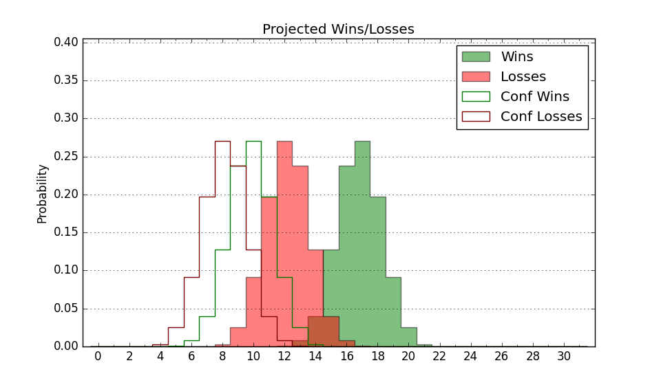

| Home | Game Probabilities | Conferences | Preseason Predictions | Odds Charts | NCAA Tournament |
| City: | Bowling Green, Kentucky | |
| Conference: | Conference USA (3rd)
| |
| Record: | 5-4 (Conf) 12-8 (Overall) | |
| Ratings: | Comp.: 3.1 (131st) Net: 2.9 (131st) Off: 102.9 (221st) Def: 99.9 (85th) SoR: 0.1 (114th) |
| Remaining | ||||||
|---|---|---|---|---|---|---|
| Date | Opponent | Win Prob | Pred. | |||
| 2/6 | @ Kennesaw St. (173) | 45.0% | L 77-78 | |||
| 2/8 | @ Jacksonville St. (121) | 32.6% | L 71-76 | |||
| 2/15 | Middle Tennessee (114) | 60.7% | W 77-73 | |||
| 2/20 | Sam Houston St. (171) | 73.5% | W 82-75 | |||
| 2/22 | Louisiana Tech (115) | 61.0% | W 74-70 | |||
| 2/27 | @ UTEP (144) | 38.1% | L 72-76 | |||
| 3/1 | @ New Mexico St. (175) | 45.4% | L 71-72 | |||
| 3/6 | FIU (234) | 83.2% | W 79-67 | |||
| 3/8 | Liberty (82) | 43.5% | L 70-72 | |||
| Previous | Game Score | |||||
| Date | Opponent | Win Prob | Result | Off | Def | Net |
| 11/4 | Wichita St. (145) | 68.2% | L 84-91 | -7.7 | -13.2 | -21.0 |
| 11/9 | @Grand Canyon (86) | 21.4% | L 72-74 | 3.9 | 6.7 | 10.6 |
| 11/17 | Lipscomb (95) | 52.8% | W 66-61 | -14.7 | 20.9 | 6.3 |
| 11/20 | Jackson St. (298) | 89.8% | W 79-62 | -0.8 | 0.4 | -0.4 |
| 11/26 | @Kentucky (14) | 4.5% | L 68-87 | -5.6 | 11.7 | 6.1 |
| 11/30 | Marshall (182) | 75.5% | W 90-82 | 7.2 | -7.6 | -0.4 |
| 12/7 | @Evansville (244) | 61.1% | W 79-65 | 13.3 | 0.7 | 14.0 |
| 12/10 | Tennessee St. (279) | 88.1% | W 84-60 | 1.2 | 10.8 | 11.9 |
| 12/14 | Murray St. (158) | 70.0% | W 81-76 | -10.1 | 5.8 | -4.3 |
| 12/17 | Seattle (157) | 69.9% | W 86-73 | 19.8 | -8.4 | 11.4 |
| 12/29 | @Michigan (18) | 5.2% | L 64-112 | -10.8 | -18.9 | -29.7 |
| 1/2 | @Liberty (82) | 18.4% | W 71-70 | 6.2 | 8.5 | 14.6 |
| 1/4 | @FIU (234) | 59.2% | L 66-85 | -14.7 | -11.1 | -25.8 |
| 1/9 | Jacksonville St. (121) | 62.2% | L 67-73 | -13.3 | -5.1 | -18.4 |
| 1/11 | Kennesaw St. (173) | 73.6% | W 85-69 | 2.4 | 6.7 | 9.2 |
| 1/18 | @Middle Tennessee (114) | 31.2% | L 57-71 | -14.4 | 1.5 | -12.9 |
| 1/23 | @Louisiana Tech (115) | 31.5% | L 67-77 | -2.2 | -5.4 | -7.6 |
| 1/25 | @Sam Houston St. (171) | 44.9% | W 75-66 | 6.0 | 7.9 | 13.9 |
| 1/30 | UTEP (144) | 67.7% | W 78-74 | 1.5 | -5.6 | -4.1 |
| 2/1 | New Mexico St. (175) | 73.9% | W 101-69 | 37.2 | -5.6 | 31.6 |
| Stats & Trends | |||||
|---|---|---|---|---|---|
| Current | Day | Week | Month | Season | |
| Composite | 3.1 | +0.1 | +1.1 | -0.8 | -2.9 |
| Comp Rank | 131 | +1 | +15 | -13 | -29 |
| Net Efficiency | 2.9 | +0.1 | +1.3 | -0.4 | -- |
| Net Rank | 131 | +2 | +16 | -6 | -- |
| Off Efficiency | 102.9 | +0.0 | +2.2 | -0.3 | -- |
| Off Rank | 221 | -- | +28 | -20 | -- |
| Def Efficiency | 99.9 | +0.0 | -0.9 | -0.1 | -- |
| Def Rank | 85 | -- | -8 | +11 | -- |
| SoS Rank | 129 | +2 | -22 | -3 | -- |
| Exp. Wins | 16.8 | -0.0 | +0.9 | -1.2 | -2.3 |
| Exp. Conf Wins | 9.8 | -0.0 | +0.9 | -1.2 | -2.5 |
| Conf Champ Prob | 7.5 | -0.7 | +4.3 | -16.7 | -32.6 |

| Advanced Stats | ||
|---|---|---|
| Stat | Value | Rank |
| Off Eff FG % | 0.504 | 186 |
| Off Ast Ratio | 0.129 | 279 |
| Off ORB% | 0.216 | 340 |
| Off TO Rate | 0.148 | 164 |
| Off FT Ratio | 0.349 | 132 |
| Def Eff FG % | 0.462 | 49 |
| Def Ast Ratio | 0.137 | 104 |
| Def ORB% | 0.259 | 81 |
| Def TO Rate | 0.149 | 173 |
| Def FT Ratio | 0.380 | 290 |